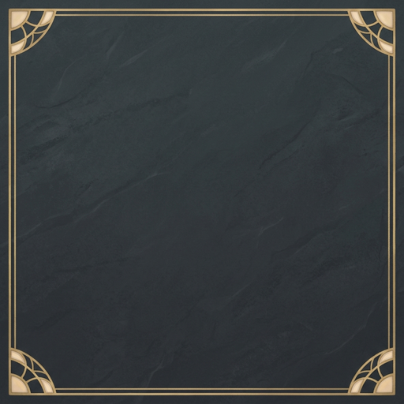

DAWN OF KIN · UI-0 R1 · PRANCHA DE IDENTIDADE VISUAL
Conceito C — O Legado
Pedra ardósia polida, incrustação de cerâmica marfim e arcos de fio dourado celebrando a família fundadora e as gerações.
Assets 100% originais · Validado em Godot 4.7.2
1280×720 & 1920×1080 · Intel UHD Graphics 620
1280×720 & 1920×1080 · Intel UHD Graphics 620
1. Material Principal (9-Slice Godot)

Superfície 9-slice em ardósia polida com arcos de filigrana dourada e cerâmica marfim nos cantos — validada em Godot 4.7.2 com apenas +16 draw calls.
2. Paleta Cromática
Ardósia
#1E2427
Fio Ouro
#DFC285
Cerâmica
#F4EFE1
Sálvia
#8BB077
3. Hierarquia Tipográfica
DAWN OF KIN — Título / Linhagem
Abrigo Básico · Casa Fundadora · Primavera
Texto funcional e contadores tabulares: Madeira 24 · Pedra 14 · Alimentos 18 · 42% (1 / 2)
4. Iconografia Original e Coerente
wood
stone
food
build
tasks
house
5. Botões e Estados de Interação (Normal · Hover · Ativo · Desabilitado)
Normal
Hover
Ativo (Fio Ouro)
Desabilitado
6. Casa Fundadora & Emblema

Alden


Brena
7. Peça Assinatura & Silhueta Espacial
Arco da Linhagem na Base Central + Topo Esquerdo 100% Livre.
Coloca o casal fundador e seus futuros descendentes no centro geométrico da interface, unidos pelo fio de ouro e pelo emblema solar, deixando toda a paisagem superior aberta.
Coloca o casal fundador e seus futuros descendentes no centro geométrico da interface, unidos pelo fio de ouro e pelo emblema solar, deixando toda a paisagem superior aberta.